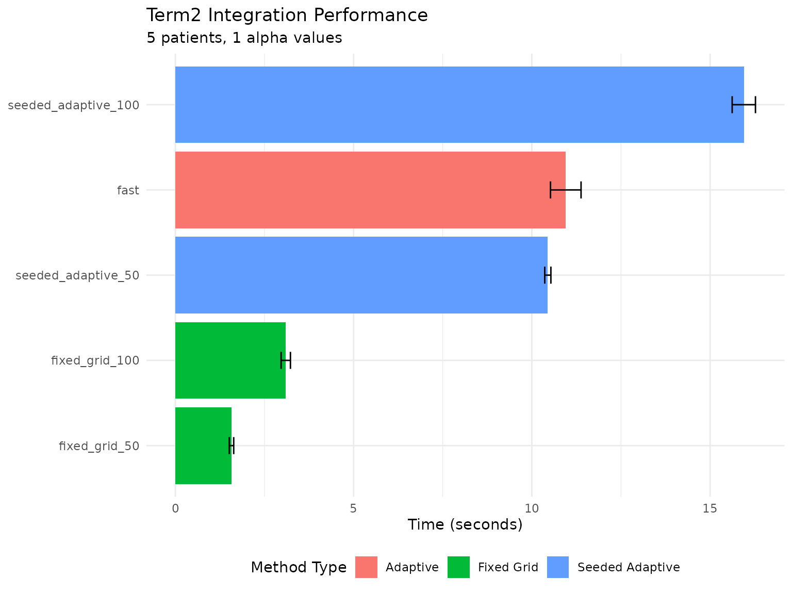
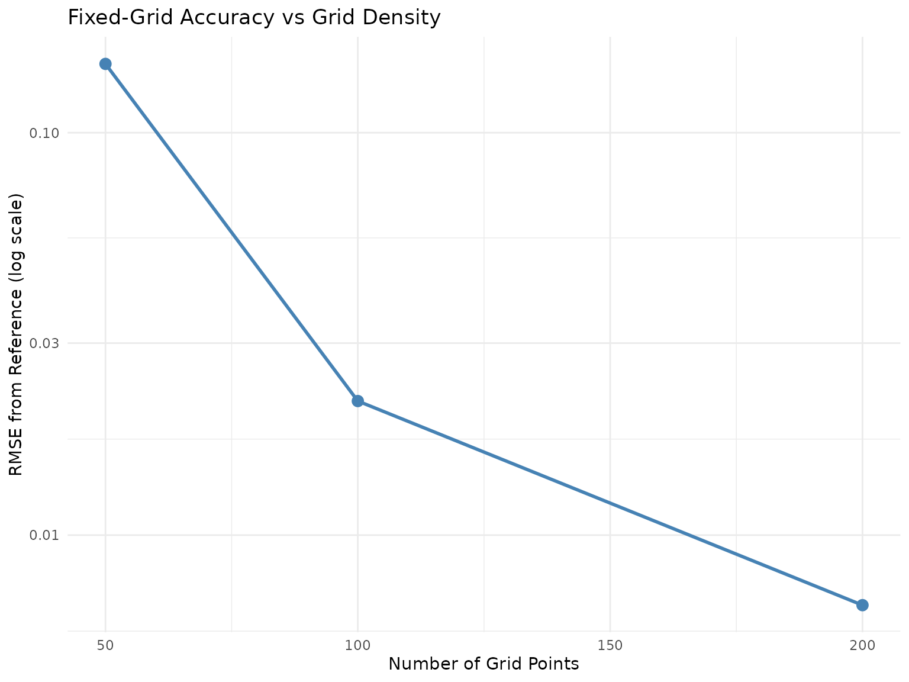
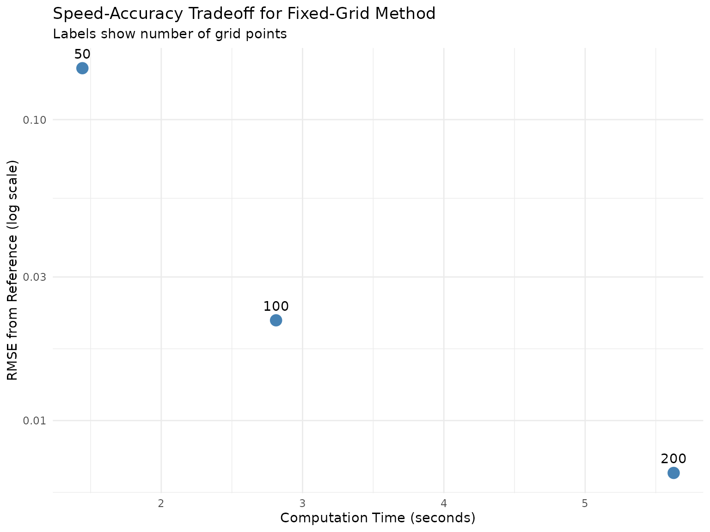

Term2 Integration Methods: Performance Comparison
Source:vignettes/term2-integration-methods.Rmd
term2-integration-methods.Rmd
library(SensIAT)
library(dplyr)
#>
#> Attaching package: 'dplyr'
#> The following objects are masked from 'package:stats':
#>
#> filter, lag
#> The following objects are masked from 'package:base':
#>
#> intersect, setdiff, setequal, union
library(ggplot2)Overview
This vignette compares integration methods for computing
term2 influence components in
fit_SensIAT_marginal_mean_model_generalized. We isolate
just the term2 computation (the numerical integration step) to provide
focused benchmarks without the overhead of full model fitting.
Available methods:
-
"fast"(default): Adaptive Simpson’s with optimized closure-based integrand -
"original": Standard adaptive Simpson’s implementation -
"fixed_grid": Pre-computed expected values on fixed grid with composite Simpson’s -
"seeded_adaptive": Adaptive Simpson’s seeded with pre-computed grid points
We evaluate across:
- Accuracy: Difference from high-precision reference
- Speed: Direct term2 computation time
- Scalability: Performance across grid densities
Setup: Data and Models
We use the package’s example data and fit the required outcome model once:
# Load and prepare example data
data_with_lags <- SensIAT_example_data |>
group_by(Subject_ID) |>
mutate(
..prev_outcome.. = lag(Outcome, default = NA_real_, order_by = Time),
..prev_time.. = lag(Time, default = 0, order_by = Time),
..delta_time.. = Time - lag(Time, default = NA_real_, order_by = Time)
) |>
ungroup()
cat("Data summary:\n")
cat(" Patients:", n_distinct(data_with_lags$Subject_ID), "\n")
cat(" Total observations:", nrow(data_with_lags), "\n")
# Fit outcome model (single-index with splines)
outcome.model <- fit_SensIAT_single_index_fixed_coef_model(
Outcome ~ splines::ns(..prev_outcome.., df = 3) + ..delta_time.. - 1,
id = Subject_ID,
data = data_with_lags |> filter(Time > 0)
)
# Imputation function for extrapolation
impute_fn <- function(t, df) {
extrapolate_from_last_observation(
t, df, "Time",
slopes = c("..delta_time.." = 1)
)
}
# Marginal mean spline knots
knots <- c(60, 260, 460)Isolated Term2 Benchmark
The benchmark_term2_methods() function directly compares
term2 computation methods without repeatedly fitting the full model.
This isolates the integration performance we care about.
Note: Results below use precomputed benchmarks shipped with the
package. To regenerate:
source(system.file("extdata", "generate_term2_benchmarks.R", package = "SensIAT"))
# Run isolated term2 benchmark
benchmark_results <- benchmark_term2_methods(
data = data_with_lags,
id = Subject_ID,
time = data_with_lags$Time,
outcome.model = outcome.model,
knots = knots,
alpha = c(-0.05, 0, 0.05),
impute_data = impute_fn,
link = "identity",
methods = c("fast", "original", "fixed_grid", "seeded_adaptive"),
grid_sizes = c(50, 100, 200),
n_patients = 20,
n_iterations = 5,
reference_method = "fast"
)Timing Results
knitr::kable(
benchmark_results$timing |>
mutate(
mean_time = sprintf("%.4f", mean_time),
sd_time = sprintf("%.4f", sd_time),
relative_speed = sprintf("%.2f", relative_speed)
),
caption = "Term2 Computation Time by Method",
col.names = c("Method", "Mean (s)", "SD (s)", "Min (s)", "Max (s)", "Relative")
)| Method | Mean (s) | SD (s) | Min (s) | Max (s) | Relative |
|---|---|---|---|---|---|
| fixed_grid_50 | 1.5750 | 0.0622 | 1.531 | 1.619 | 1.00 |
| fixed_grid_100 | 3.0975 | 0.1308 | 3.005 | 3.190 | 1.97 |
| seeded_adaptive_50 | 10.4480 | 0.0863 | 10.387 | 10.509 | 6.63 |
| fast | 10.9520 | 0.4285 | 10.649 | 11.255 | 6.95 |
| seeded_adaptive_100 | 15.9460 | 0.3267 | 15.715 | 16.177 | 10.12 |
Accuracy Results
Accuracy is measured against the fast method (adaptive
Simpson’s):
knitr::kable(
benchmark_results$accuracy |>
mutate(
max_abs_diff = sprintf("%.2e", max_abs_diff),
mean_abs_diff = sprintf("%.2e", mean_abs_diff),
rmse = sprintf("%.2e", rmse)
) |>
select(method, max_abs_diff, rmse),
caption = "Accuracy vs Reference (fast method)",
col.names = c("Method", "Max |Diff|", "RMSE")
)| Method | Max |Diff| | RMSE |
|---|---|---|
| fixed_grid_50 | 5.36e-01 | 1.48e-01 |
| fixed_grid_100 | 6.29e-02 | 2.15e-02 |
| seeded_adaptive_50 | 3.91e-05 | 9.83e-06 |
| seeded_adaptive_100 | 1.62e-05 | 4.57e-06 |
Visualization
timing_df <- benchmark_results$timing |>
mutate(
method_type = case_when(
grepl("fixed_grid", method) ~ "Fixed Grid",
grepl("seeded", method) ~ "Seeded Adaptive",
TRUE ~ "Adaptive"
)
)
ggplot(timing_df, aes(x = reorder(method, mean_time), y = mean_time, fill = method_type)) +
geom_col() +
geom_errorbar(aes(ymin = mean_time - sd_time, ymax = mean_time + sd_time), width = 0.2) +
coord_flip() +
labs(
title = "Term2 Integration Performance",
subtitle = paste(benchmark_results$setup_info$n_patients, "patients,",
benchmark_results$setup_info$n_alphas, "alpha values"),
x = NULL,
y = "Time (seconds)",
fill = "Method Type"
) +
theme_minimal() +
theme(legend.position = "bottom")
Term2 computation time by method
Grid Density Analysis
How does accuracy scale with grid density for fixed-grid method?
# Benchmark with varying grid sizes
grid_benchmark <- benchmark_term2_methods(
data = data_with_lags,
id = Subject_ID,
time = data_with_lags$Time,
outcome.model = outcome.model,
knots = knots,
alpha = 0,
impute_data = impute_fn,
link = "identity",
methods = c("fast", "fixed_grid"),
grid_sizes = c(25, 50, 75, 100, 150, 200),
n_patients = 15,
n_iterations = 3,
reference_method = "fast"
)
# Extract grid-specific results
grid_accuracy <- grid_benchmark$accuracy |>
filter(grepl("fixed_grid", method)) |>
mutate(
grid_n = as.numeric(gsub("fixed_grid_", "", method))
)
grid_timing <- grid_benchmark$timing |>
filter(grepl("fixed_grid", method)) |>
mutate(
grid_n = as.numeric(gsub("fixed_grid_", "", method))
)
# Combine for plotting
grid_combined <- left_join(grid_accuracy, grid_timing, by = c("method", "grid_n"))
ggplot(grid_combined, aes(x = grid_n)) +
geom_line(aes(y = rmse), color = "steelblue", linewidth = 1) +
geom_point(aes(y = rmse), color = "steelblue", size = 3) +
scale_y_log10() +
labs(
title = "Fixed-Grid Accuracy vs Grid Density",
x = "Number of Grid Points",
y = "RMSE from Reference (log scale)"
) +
theme_minimal()
Fixed-grid accuracy vs grid density
ggplot(grid_combined, aes(x = mean_time, y = rmse, label = grid_n)) +
geom_point(size = 4, color = "steelblue") +
geom_text(vjust = -1, hjust = 0.5) +
scale_y_log10() +
labs(
title = "Speed-Accuracy Tradeoff for Fixed-Grid Method",
subtitle = "Labels show number of grid points",
x = "Computation Time (seconds)",
y = "RMSE from Reference (log scale)"
) +
theme_minimal()
Speed-accuracy tradeoff
Recommendations
Based on this analysis, here are recommended integration methods:
Use "fast" (default) when:
- Highest accuracy is required
- Fitting only 1-2 alpha values
- Integrand has irregular features requiring adaptive refinement
- Default choice for most applications
Use "fixed_grid" when:
- Fitting many alpha values (5+)
- Speed is critical and moderate accuracy acceptable
- Willing to tune
term2_grid_nfor accuracy/speed trade-off-
term2_grid_n = 100: Good default -
term2_grid_n = 200: Higher accuracy -
term2_grid_n = 50: Maximum speed
-
Session Info
sessionInfo()
#> R version 4.5.3 (2026-03-11)
#> Platform: x86_64-pc-linux-gnu
#> Running under: Ubuntu 24.04.4 LTS
#>
#> Matrix products: default
#> BLAS: /usr/lib/x86_64-linux-gnu/openblas-pthread/libblas.so.3
#> LAPACK: /usr/lib/x86_64-linux-gnu/openblas-pthread/libopenblasp-r0.3.26.so; LAPACK version 3.12.0
#>
#> locale:
#> [1] LC_CTYPE=C.UTF-8 LC_NUMERIC=C LC_TIME=C.UTF-8
#> [4] LC_COLLATE=C.UTF-8 LC_MONETARY=C.UTF-8 LC_MESSAGES=C.UTF-8
#> [7] LC_PAPER=C.UTF-8 LC_NAME=C LC_ADDRESS=C
#> [10] LC_TELEPHONE=C LC_MEASUREMENT=C.UTF-8 LC_IDENTIFICATION=C
#>
#> time zone: UTC
#> tzcode source: system (glibc)
#>
#> attached base packages:
#> [1] stats graphics grDevices utils datasets methods base
#>
#> other attached packages:
#> [1] ggplot2_4.0.2 dplyr_1.2.1 SensIAT_0.3.0.9000
#>
#> loaded via a namespace (and not attached):
#> [1] sass_0.4.10 generics_0.1.4
#> [3] tidyr_1.3.2 KernSmooth_2.23-26
#> [5] lattice_0.22-9 pracma_2.4.6
#> [7] digest_0.6.39 magrittr_2.0.5
#> [9] evaluate_1.0.5 grid_4.5.3
#> [11] RColorBrewer_1.1-3 fastmap_1.2.0
#> [13] jsonlite_2.0.0 Matrix_1.7-4
#> [15] survival_3.8-6 purrr_1.2.2
#> [17] orthogonalsplinebasis_0.1.7 scales_1.4.0
#> [19] textshaping_1.0.5 jquerylib_0.1.4
#> [21] cli_3.6.6 rlang_1.2.0
#> [23] splines_4.5.3 withr_3.0.2
#> [25] cachem_1.1.0 yaml_2.3.12
#> [27] tools_4.5.3 assertthat_0.2.1
#> [29] vctrs_0.7.3 R6_2.6.1
#> [31] lifecycle_1.0.5 fs_2.0.1
#> [33] MASS_7.3-65 ragg_1.5.2
#> [35] pkgconfig_2.0.3 desc_1.4.3
#> [37] pkgdown_2.2.0 pillar_1.11.1
#> [39] bslib_0.10.0 gtable_0.3.6
#> [41] glue_1.8.0 Rcpp_1.1.1-1
#> [43] systemfonts_1.3.2 xfun_0.57
#> [45] tibble_3.3.1 tidyselect_1.2.1
#> [47] knitr_1.51 farver_2.1.2
#> [49] htmltools_0.5.9 rmarkdown_2.31
#> [51] labeling_0.4.3 compiler_4.5.3
#> [53] S7_0.2.1-1